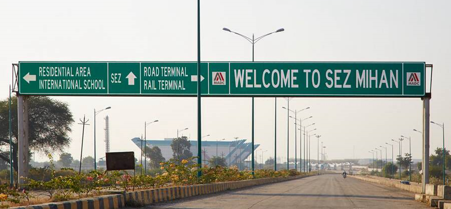

SEZ MIHAN
MIHAN has a very strategic location, as it is located at the geometrical center of the country and is easily accessible by road, rail and air. This is the only multi product Special Economic Zone which is adjacent to an existing international airport. MIHAN SEZ has already become operational, and is spread over an area of more than 1382 Ha.
A number of leading IT Companies Like Infosys, TCS, WIPRO, Tech Mahindra and HCL have taken land for their centres, while IT parks are being developed by large corporate like DLF, Shapoorji Pallonji and L&T. Companies like Hexaware BPS, TAL and Lupin Pharma (Trial Drug Formulation) have already started exports from MIHAN SEZ whereas TCS and Air India-Boeing are going to start their operations very soon.
In MIHAN SEZ total area allotted is around 510 ha to 54 companies out of which 15 companies tie in different phase of operation. A total investment made by MADC & investors is around 4500 Crs and direct and indirect employment generated is around 6000. The cumulative Exports have touched around 115 Crore. There are many potential companies have expressed setting up their units in MIHAN.
MIHAN SEZ is a platform for export oriented companies, is a multi-product SEZ, which is already operational spread over an area of more than 1597 Ha. and boasts off quality infrastructure like 6, 4 and 3 lane roads, telecom system using optic fiber cable, water supply - both potable and for other uses, storm water drainage, sewage etc.
The space is extremely useful for service and exporting companies because of the location and infrastructure benefits provided in MIHAN. Seven Companies along with the office of Maharashtra Airport Development Company (MADC) and Development Commissioner and Utility services are located in Central Facility Building. Caliber point (Hexaware Group) and TAL manufacturing Solutions have completed their 1st phase of project is already exporting.
SP infocity (Kolland Developers) have completed part construction. Boeing jointly with Air India has completed project expected to start operations by March 2015. They have investment envisaged around 500 Crs. TCS construction of around 11 lac sq.ft completed would employ around 8000 people by end of Dec 2014 have envisaged investment of around 500 crs. Mahindra Tech (Satyam) has started the civil work and Infosys plan to start construction to employ around 1000 in the first phase and have obtained the initial budget allocation of around 250 Crs. Lupin Pharma has commissioned the plant with an invest of around 250 Crs and the commercial operation expected by Dec 2014.